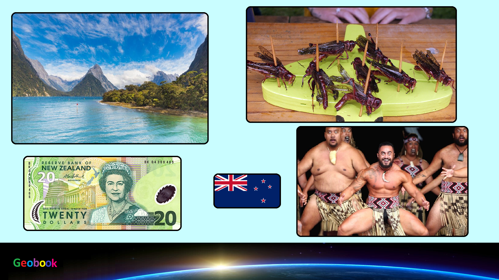

____
Традиционная еда
Хлеб Маори (Maori bread) — традиционный хлеб, приготовленный из ферментированного картофеля. Аутентичное название — ревена (rēwena).
Сырный скон (Cheese scone) — небольшая булочка с сыром. В Новой Зеландии является популярной закуской, которую можно купить в кафе или чайных лавках, где их обычно подают со сливочным маслом. Сырный скон включен в кулинарную книгу Эдмондса и составляет часть кухни кивиана.
Маори бойл-ап (Maori boil-up) — аутентичное блюдо маори, коренного племени Новой Зеландии. Обычно его готовят из свинины с добавлением картофеля, батата, клецок, а также растения, похожего на одуванчик, которое называется осот (puha).
Сосидж ролл (Sausage roll) — сосиска в тесте. Британская закуска, популярная в странах Содружества наций, в том числе в Новой Зеландии. Их продают в пекарнях и уличных лавках в качестве стрит фудас.
____
